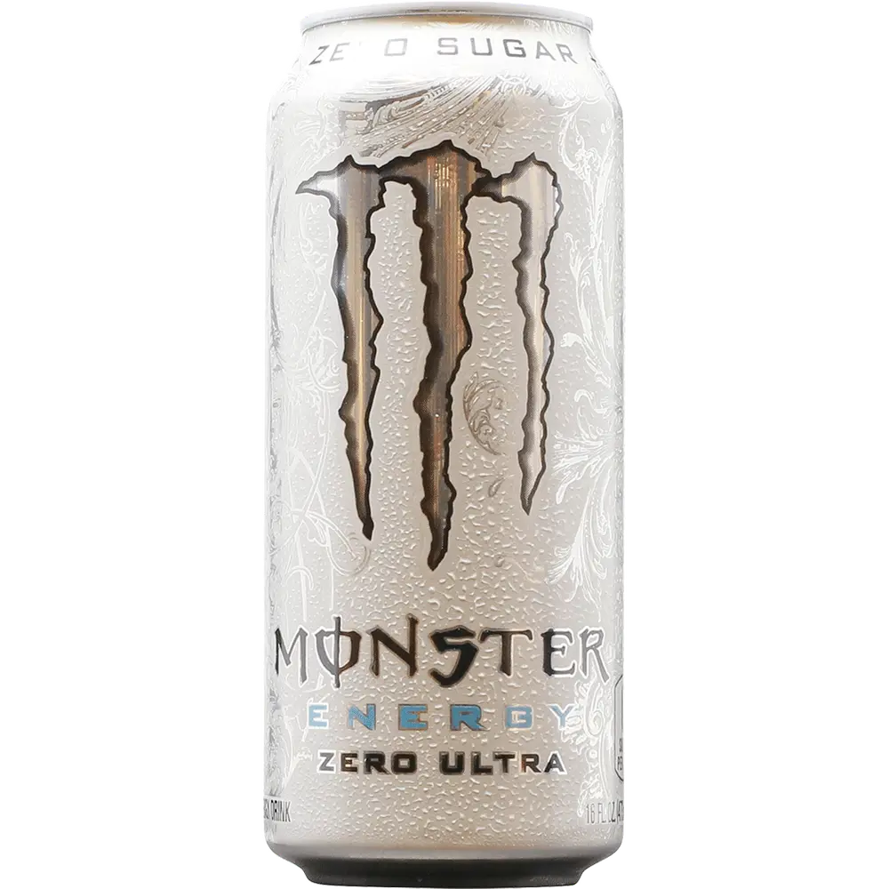

Einleitung
White monster ist ein erfrischendes und süsses enery-getränk.
Dieses rezept dauert ~5min.

Zutaten
- Kaltes Wasser: 500ml
- Zucker: 50g
- Koffein: 150mg
- Taurin: 100mg
- Grapefruit-saft: 10ml
Schritte
- Zutaten zusammen mischen
- Geniessen😁
Ähnliche rezepte